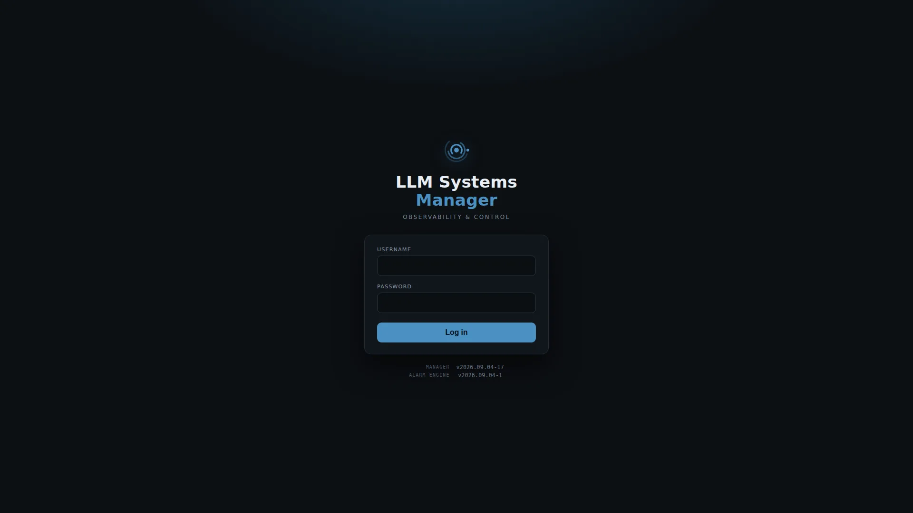

Your hardware. Your models. One control plane.
LLM Systems Manager is a complete, self-hosted operations platform for LLM infrastructure: monitoring, remote control, tuning, routing, and alerting for llama.cpp, vLLM, and LM Studio, all in one place.
$ bash <(curl -fsSL https://raw.githubusercontent.com/llmsyscore/llm-systems-manager/main/tools/installer/install.sh)
# Debian / Ubuntu
$ curl -fsSLO https://github.com/llmsyscore/llm-systems-manager/releases/download/v1.1.0/llm-systems-manager_1.1.0_all.deb
$ sudo apt install ./llm-systems-manager_1.1.0_all.deb
# RHEL / Fedora
$ curl -fsSLO https://github.com/llmsyscore/llm-systems-manager/releases/download/v1.1.0/llm-systems-manager-1.1.0-1.noarch.rpm
$ sudo dnf install ./llm-systems-manager-1.1.0-1.noarch.rpm
$ curl -fsSLO https://raw.githubusercontent.com/llmsyscore/llm-systems-manager/main/docker-compose.yml
$ curl -fsSL https://raw.githubusercontent.com/llmsyscore/llm-systems-manager/main/.env.example -o .env
$ docker compose up -d
$ brew tap llmsyscore/tap && brew trust llmsyscore/tap
$ brew install llm-systems-manager llm-systems-alarm-engine influxdb@2 influxdb-cli
$ llm-systems-influx-setup
$ brew services start llm-systems-manager
$ brew services start llm-systems-alarm-engine
One command installs the full stack. The installer is interactive. It handles prerequisites, InfluxDB, TLS, and agents, and never starts a service without you.
Architecture
Three small services, one platform
A lightweight agent on every host, a manager as the control plane, and a standalone alarm engine, with TLS/mTLS on every connection.
agent · per host
One cross-platform binary for Linux and macOS. Auto-detects what each box runs and reports host, GPU, PSU, and inference-server metrics.
- llama.cpp / vLLM / LM Studio
- stable-diffusion.cpp
- GPU · PSU · UPS · cooling
manager · control plane
The dashboard, the OpenAI-compatible gateway, model library and profiles, Autopilot routing, users and roles, backups.
- web dashboard + admin console
- /v1 inference gateway
- Model Autopilot
alarm engine
Stores every sample, evaluates threshold and anomaly rules, and collapses bursts of related issues into single incidents.
- InfluxDB history
- email · toast · webhook · Discord
- offline buffer + replay
What's inside
Everything self-hosted inference needs, in one place
From a single Mac to a rack of GPU hosts, with the same dashboard, gateway, and alerting.
Model Autopilot
Configure which models should be available. Autopilot places them on hardware that can run them, brings them back when a host drops, and automatically scales with the demand.
OpenAI-compatible gateway
One endpoint fronts every backend. A merged model catalog, per-model pinning, pooling, and failover to a live host when one goes down. Streaming included, and apps see one stable URL.
Telemetry & alerting
LLM-aware metrics down to slots, tokens/sec, and KV cache, plus a standalone alarm engine with threshold and anomaly rules that collapses bursts into single incidents.
Energy & cost intelligence
Measures what inference actually costs in $/Mtok against your electricity price, with savings versus hosted-API pricing and per-host performance profiles that reduce power draw and noise when a system is idle.
Benchmarking & autotuning
Run throughput benchmarks across your whole model library, and let the autotuner search out the best context and slot configuration for each model on its own hardware.
Model management
Pull models straight from Hugging Face, prune files to reclaim disk, and keep named config profiles per model; switching profiles reloads the model in one click.
Remote control
Start, stop, hot-swap models, edit configs, tail logs, or open an in-browser terminal for any host, from one page. A Discord bot exposes the same controls as slash commands.
GPU Report Card
A standardized benchmark that produces one shareable card: time-to-first-token, throughput, tokens/joule, and measured $/Mtok, comparable across providers and machines.
Screenshots
Inside the dashboard
Captured from a live deployment. Every view shown here is part of the product.
A guided tour through the platform: overview, dashboards, energy and cost, model control, GPU report card, chat, image generation, events, admin, and the alarm console.

Installation
Install it your way
The script installer is the preferred path. The alternatives cover specific setups.
Script installer preferred
One interactive command covers everything: full stack, split installs, agents, offline installs, and updates.
Native packages
.deb and .rpm packages for hosts standardized on apt or dnf package management.
Docker Compose
A containerized control plane: manager, alarm engine, and InfluxDB, with agents installed on hosts.
Homebrew
Agents on macOS install straight from the tap, with signed release binaries.
Local hardware. Private data. Full control.
Run models on hardware you own, keep every prompt and metric on your network, and manage it all from one dashboard. Free and open source under AGPL-3.0.